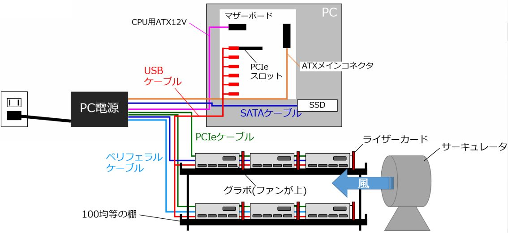
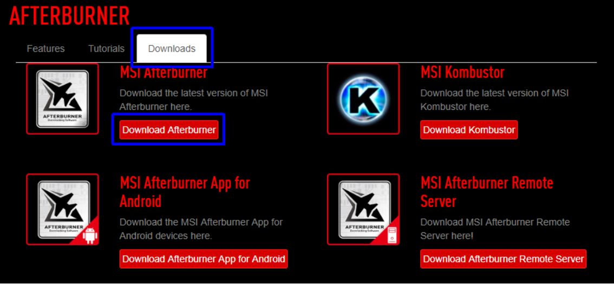
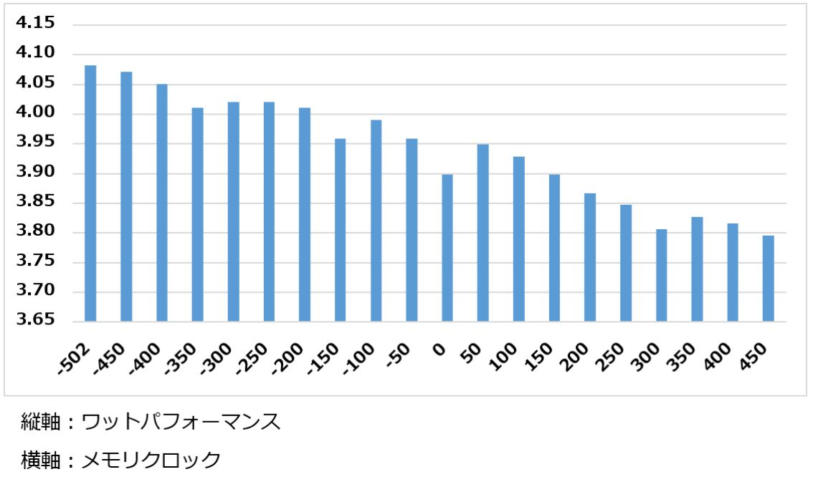
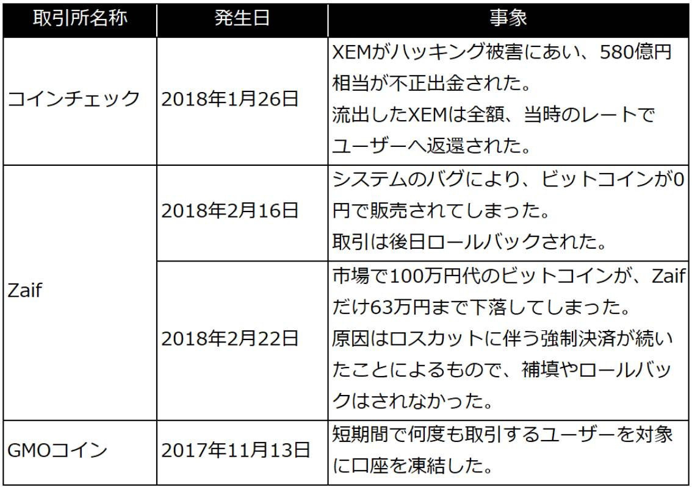
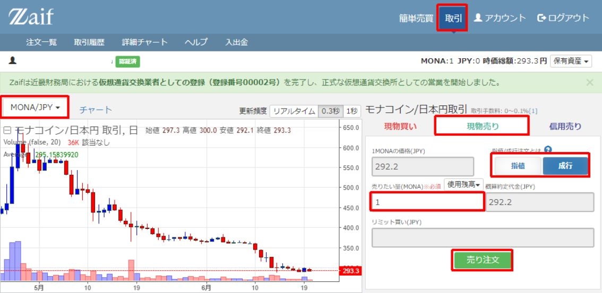

| GPUマイニングの結論: 収益を最大化させるための設定ノウハウ集 | |
| 小笠原 博樹 | |
| (2018) | |
GPU
マイニング
の
結論
収益を最大化させるための設定ノウハウ集
小笠原 博樹
目次
その他 の P C パーツ （ CPU / メモ リ/ ストレージ）
はじめに
仮想通貨の収益について
本書を手に取っていただき、まことにありがとうございます。
恐らく本書を手に取っていただいた方は「お金持ちになりたい」「不労所得を得たい」といった野望があるのではないでしょうか。
私もその考えを持った一人です。
「お金持ちになりたい」「不労所得を得たい」だけ切り取って見ると、とても自分勝手で、「ラクして生きよう」と思われても仕方ありません。
しかし世の中に目を向ければ、金融業・株式投資・各種保険・不動産業・駐車場など、「資産」を基に利子を受け取る商売が数多くあります。
「普通の会社」でさえ、「売れる仕組み」と「資産」を使って利益を上げています。
「汗水たらして働く」ことが美徳だということは学校の教育で刷り込まれてきましたので、ほとんどの方は、「ラクしてお金儲け」は悪だと思うでしょう。
しかし日本は資本主義。
「汗水たらして働く」ということは、経営者・投資家に搾取されることを望んでいるのと同じですし、ブラック企業を増加させる原因にもなります。
搾取されるのが嫌であれば、何かしらの「利子」を生み出す「資産」が必要です。
その中でも比較的参入が容易なのが「仮想通貨マイニング」だと思っています。
「ハッシュレート」と「消費電力」の２つが利益を決めるという、非常にわかりやすい仕組みです。
本書やインターネットの記事や自身での研究を基に、日々のマイニング手法を工夫し、利益を最大化していただければ幸いです。
読んでいただきたい方
本書は、日本国内でグラフィックボードを使ったマイニングを自宅で行っている（行う予定の）方向けに作成いたしました。
・これからマイニングを始めたい
・ゲーミン
グ
P
C
でマイニングを始めてみたが、規模を大きくしたい
・規模は大きいが消費電力を抑えたい
・快適なマイニング環境を作りたい
また、本書では以下
の
P
C
環境を基に説明しております。
・
Windows 10 64bit
日本語版
・ファイル拡張子が表示されている
なぜノウハウを公開してしまうのか
ノウハウを公開してしまうと、ハッシュレート・採掘難易度が上がってしまうため、マイニング報酬が減ってしまいます。
なぜ私がノウハウを公開するのか①
「マイニング人口・ハッシュレートが増えた方が、仮想通貨全体が盛り上がるから」
仮想通貨全体が盛り上がるともちろん通貨レートも上昇しますし、取引量も増えます。
また、仮想通貨が決済に利用され始めると、クレジットカードや国際送金で発生する、為替手数料や利用手数料が低くなるメリットもあります。
なぜ私がノウハウを公開するのか②
「ハッシュレートへの影響は限定的だから」
本書ノウハウの想定環境は、
「今住んでいる
家(
部
屋)
でのマイニング」
となりますので、設備増強もたかが知れていますし、もし増築や賃貸契約で部屋を増やしたとしても、収益化が一気に難しくなってしまいます。
また、読み進めていただければわかるのですが、使用する電力設定をかなり下げるように推奨しております。
よって、「ハッシュレート上昇は限定的で、電気消費量が下がる」と想定しています。
免責
本書に掲載されている情報は、個人の経験・調査を基に作成したものですので、細心の注意を払っておりますが、内容が正確であるかどうか、最新のものであるかどうか、安全なものであるか等について保証をするものではなく、何らの責任を負うものではありません。
当社は読者様に通知することなく本書に掲載した情報の訂正、追加、削除等をいつでも行うことができるものとします。
本書掲載内容のご利用により、万一、読者様に何らかの不都合や損害（機器の破壊・火災・健康被害等）が発生したとしても、当社は何らの責任を負うものではありません。ご了承ください。
マイニングに必要な機材
グラボ・PCパーツの入手方法と注意点
マイニングを始めるためには、まずグラフィックボード（以降グラボ）や電源等 の P C パーツを入手する必要があります。
自 作 P C に詳しい方であれば、既存のものを流用いただいてもよろしいかと思いますが、本書では新規に入手するところから始めたいと思います。
【おすすめ】フリマアプリやオークション等の個人売買
これらのサービスでは 、 P C パーツを安価に入手することができ、私自身もほとんどのパーツはここで入手しています。
安価で入手できる反面、注意するポイントもありますので紹介します。
・ 初期不良リスク
私自身 、 2 0 回の取引のうち１回は、想定外の状態でパーツが届きます。
例えば「グラボのファンが片方壊れていて回らない」等です。
出品者は、商品の状態を正確に把握しているわけではなく、「正常に動いていたものを取り外したので正常品」という認識です。
よって、ファンが片方壊れていたとして も P C のケースの蓋を外した状態で確認はしていないため、気づかなかったということもありえます。
今回のファンの故障についてはもちろん返品対応となりましたが、取引時間については戻ってきません。
このようなことが起きるということも念頭に個人売買をしていただければと思います。
・ 自然故障リスク
通常の利用で故障した場合、１年以内であればメーカー保証が適用されますが、個人売買でグラボを入手した場合、それが適用されない可能性が高いです。
私自身グラボが壊れたことがないことと、メーカーによって保証内容に違いがあるため本書では詳しく解説いたしませんが、「故障した場合は有償修理になる可能性が高い」という点を理解した上で個人売買をしていただければと思います。
・ 悪意を持った出品者と取引するリスク
私の場合は悪意を持った出品者とのやりとりはございませんでしたが、グラフィックボード等 の P C パーツ は 1 0 万円以上の高価なものもあり、悪意を持った出品者が不良品を出品している可能性も皆無ではありません。
例えば「ジャンク品」を「正常品」として出品し、ノンクレーム・ノンリターンを条件に取引するというものです。
よって、出品者の取引履歴ページにアクセスし、「一定金額のものを複数回、正常取引している」ということを確認してから取引することをおすすめいたします。
ショッピングサイトや店頭での購入
中古で出回っていないものや、すぐに欲しいものはこちらで購入する形になります。
マザーボード、ライザーカード等がおすすめです。
個人売買と比べると割高ですが、各種のリスクがなくなり、手に入るというメリットがありますので、使い分けていただければと思います。
おすすめのグラボ
結論
・ MSI GeForce GTX 1080 Ti GAMING X 11G
・ Palit GTX 1080 Ti GameRock Premium Edition
どちらも大型ですが冷却能力が高く、他のオリジナルファンモデルより も 1 0 ℃ほど低い温度になります。
特 に MSI Gaming X はわずかですが、電力あたりのハッシュレートが高いようです。
同じような値段でしたらぜ ひ MSI Gaming X をご購入ください。
Nvidia GforceかAMD radeonか
それぞれ、マイニングする仮想通貨のアルゴリズムによって得意分野がありますが、私 は Nvidia Geforc e をおすすめします。
理由は、マイニングできる通貨が多いからです。
おすすめの型番(1060や1080等)について
GT X の型番 は 201 8年6 月現在 、 GTX105 0～ GTX1080T i まであります。
※Tita n 等のハイエンドモデルは、購入金額の回収期間が非常に長くなってしまうため割愛
この中でも一番のおすすめ は GTX1080T i です。
理由はいくつかあります。
・ ワットパフォーマンスが良い
ワットあたりのハッシュレートを「ワットパフォーマンス」といい、これが収益に直結します。
このワットパフォーマンスが一番良いの が GTX1080T i になります。
一部ブログで は GTX108 0 が一番良いという記述がございますが、どちらも試して見た結果 、 GTX1080T i のほうが優れていることがわかりました。
・ 設置スペースを削減できる
これは非常に重要です。
マイニングは設備を大規模にするほど収益が上がりますので、設置スペースをできる限り削減した方が良いです。
よって、
「グラボ性能の低いものを大量に用意」するよりも、
「グラボ性能の高いものを少数用意」するほうが、
同じハッシュレートでもいろいろとメリットが大きいです。
しかし、購入コストは高くなる傾向にありますので、高いワットパフォーマンスを活かしてコストを回収していく形になります。
ワットパフォーマンスの比較
入手コストの比較
設置スペースの比較
※
PC
1
台に、グラ
ボ6
台を接続できる想定
※ハッシュレートアルゴリズム
は
Equihas
h
、マイニングソフト
は
Bmine
r
を想定
※価格は
、
201
8年6月
1
5
日現在の価
格
.co
m
における最安
値(
税
込
)
空冷式か水冷式か
まずグラボは、空冷・水冷 の2 種類がありますが、特に理由がない限り「空冷」をお選びください。
理由は導入コストが安く、接続の構造が複雑になりにくいからです。
外排気か内排気か
外排気とは、冷却ファンに「シロッコファン」を利用し、グラボの熱 を P C ケースの外へ直接逃がす方式です。
マイニングにおいて、「外排気」モデルはおすすめしません。
理由はオリジナルファンモデルと比べて冷却力が弱く、グラボ自体の寿命が短くなってしま
う(※)
ためです。
※コンデンサの寿命は
、
1
0
℃上がるごとに半分になると言われている。
電源
おすすめの電源①
Corsair HX1200i CP-9020070-JP
特徴
・6
台
の
GTX1080T
i
を接続でき
る(※
)
・
PLATINU
M
認証取得のため電気代・発熱を大幅に抑えられる
・
1
0
年保証
・有名ブランドのため売却時の値下がりが少ない
・価格
は
30,00
0
円前後と若干値が張る
・
PCI
e
ケーブ
ル
(6+
2×
2
)が2
本足りないため、別途購入する必要有り
（2
本
で
4,00
0
円前後）
※
P
Lを
5
5～
6
0
に抑えた場合
おすすめの電源②
Segotep GP1350-FM Gold
特徴
・6
台
の
GTX1080T
i
を接続でき
る(※
)
・
GOL
D
認証取得のため電気代・発熱を抑えられる
・3
年保証
・価格
は
20,00
0
円前後とリーズナブル
※
P
Lを
5
5～
6
0
に抑えた場合
電力による違い
電源ユニットの電力は幅広くあり、低いもの
で
300
W
、大きいもので
は
1,600
W
等もあります。
電力が大きくなるほど、
１．高額になる
２．グラボの接続可能数が増える
という特徴があります。
特に「２」が重要で、電力が低い電源を購入してしまうと、グラボを増やすたびに電源が増えていくという状態になってしまいます。
よって、電力が大きい電源のご購入をおすすめいたします。
80PLUS認証のランクによる違い
電源には
「
80PLU
S
認証」のというランクがあります。
変換効率
が
8
0
％以上の基準を満たした製品は、この認証が付くことになります。
認証には「スタンダード」から「チタン」ま で6 種類あります。
各グレードの電気変換効率
マイニングは電源を 、 2 4 時間・高負荷で利用しますので、可能な限り高効率の認証電源が好ましいです。
「チタン」についてはラインナップ自体が少なく、割高であるため、「ゴールド」か「プラチナ」をおすすめいたします。
メーカーによる違い
電源メーカー一覧
有名なものだけで も 1 0 社以上あります。
・
Corsair
(
コルセ
ア
)
・玄人志向
・オウルテック
・
ANTEC
(
アンテッ
ク
)
・
CoolerMaster
(
クーラーマスタ
ー
)
・
SilverStone
(
シルバーストー
ン
)
・
ENERMAX
(
エナーマック
ス
)
・
Seasonic
(
シーソニッ
ク
)
・
Colorful
(
カラフ
ル
)
・
Thermaltake
(
サーマルテイ
ク
)
おすすめメーカー
各社、それぞれ特徴はありますが、マイニングにおいては 「 Corsair ( コルセ ア) 」 「 Colorfu l 」をおすすめいたします。
理由は以下の通りです。
・品質が高い
・どこにでも売っているため入手しやすい
・人気なため売却が楽で、売却時の値下がりも少ない
・保証期間が長
い(
最
長
1
0年
)
ライザーカード
おすすめのライザーカード
N.ORANIE USB 3.0 PCI-E Express PCI-E 1X to 16X ライザー エクステンダーカード
理由
・初期不良が少ない
・自然故障が少ない
・2
種類の通電確認ランプ付き
余分に買うことの大切さ
ライザーカードはセット買いで、余分に購入することをおすすめいたします。
理由
・単価が安い
・初期不良や自然故障が発生してもマイニングが中断されない
マザーボード
おすすめのマザーボード
MSI H310-A PRO
理由
・
PCI
e
のみで、グラボ
を7
台まで接続可能
・
BIS
O
にマイニングオプションがあり、安定稼働できる
これ以外のマザーボードも使用したことがありますが、認識できる台数が少なかったり安定稼働できなかったりしました。
※私個人の知識によるものかもしれませんのでご容赦ください。
大量のPCIEが搭載されたマザーボードについて
マイニング用 に PCI eが 1 0～ 2 0 ほど搭載されたマザーボードが販売されておりますが、以下の理由からおすすめしておりません。
理由
・配線の物理的な都合上
、
1
0
台以上の接続が難しい
・
Windows1
0
は、グラボ
を8
台までしか認識できない
・マイニング用途以外の機能・性能が削減されている
・売却先の対象範囲が狭い
その他のPCパーツ（CPU/メモリ/ストレージ）
CPU
マイニングにおいて 、 CP U のパワーは最低限で問題ありません。
よっておすすめの型番は 、 Celero n 系になります。
マザーボードにより、選択肢は以下のようになります。
第8世代「Coffee Lake」（マザーボード：H370・B360・H310）
・
Celeron G4900
・
Celeron G4920
第6世代「Skylake」第7世代「Kaby Lake」等
・
Celeron G3900
・
Celeron G3920
※もしもマイニング 用 P C でゲーム等を行う場合は、この限りではありません。
CPUファンについて
CP
U
リソースはほぼ使わないため、付属（リテール）で十分です。
おすすめのメモリ
4G B の適合製品
理由
マイニングにおいて、メモリリソースはほぼ使いませんので、メモリは最低限で問題ありません。
よって容 量 4G B の適合品をご購入いただければ大丈夫です。
※もしもマイニング 用 P C でゲーム等を行う場合は、この限りではありません。
おすすめのストレージ
64G Bの SSD
理由
ストレージに は HD Dと SD D の２つがありますが、おすすめ は SS D になります。
SS D の方が 、 HD D よりも消費電力 が 15 W ほど低く、また発熱も抑えられるため、マイニングにおいて は SS D をおすすめいたします。
なお 、 Windows1 0の O S データ容量的に 、 32G Bの SS D ですと容量不足を起こす可能性がありますので 、 64G B 以上の製品を選択いただくことをおすすめいたします。
マイニングリグについて
あいにく私自身、マイニングリグを構築したことがありません。
総合的に考えての判断ですが、リグを使った方が良い場合もあるため、メリット・デメリットを紹介します。
メリット
１．地震に強い
２．システム全体をコンパクトにできる
３．リグを縦に複数台詰むこともできる
４．グラボを縦に固定できる
特に「４」のメリットは大きいかなと思います。
リグを使わない場合、グラボのファンを上に向けて設置してしまいがちです。
もしマイニング中にネジ等をファンに落としてしまった場合、破損の影響がかなり大きくなります。
デメリット
・導入費用が高い
・レビューが低いものが多い
・用途がマイニングに限られる
リグの導入はこれらのメリット・デメリットを踏まえたうえでご検討ください。
おすすめのPC構成
以上を踏まえた上で、おすすめ の P C 構成を紹介します。
ハッシュレート
Equihas
h
：
約
3,600 sol/s
Lyra2REv
2
：
約
240MH/s
消費電力
約
850W
※ Power Limit 5 5 ％程度の場合
※
201
8年6月
1
5
日現在の価
格
.co
m
における最安価格、もしく
は
Amazo
n
の価
格(
税
込
)
※マウス・キーボード
・
LA
N
ケーブル・サーキュレータ等の周辺機器は含みません
マイニング開始までの流れ
グラボの接続
ライザーカードを使い 、 P C とグラボを接続します。
1台だけ接続するイメージ
スロットカバーから各種コネクタを通している理由
ケースの蓋を開けっ放しにして配線する方式もありますが、その場合マザーボード内にホコリが入り、故障の原因となってしまうためです。
電源をPCケース外に出している理由
電源を通常のようにケース内に設置すると 、 PCI e ケーブルがグラボまで届かなくなってしまうためです。
6台接続するイメージ

注意点
・ 【警告】ライザーカード 用 SAT A ・ペリフェラルケーブルは発火・火災の恐れがあるため、ケーブ ル1 本で必 ず1 台までの接続としてください。（たこ足厳禁）
・
【警告】コンセントの定格電流
は
15
A
ですので、図のマイニングシステム（
約
850
W
）
を1
つのコンセント
に2
台接続することはできません。（発火・火災の恐れがあります。）
別のコンセントをご利用ください。
（2
口以上のコンセントの場合も、定格電流は合計
で
15
A
となりますので不可です）
・ 【注意】ケーブルがグラボのファンに触れないよう、結束バンド等で固定ください。
・最初か ら6 台を接続するのではなく、ま ず1 台接続し て Nvidi a ドライバをインストールし、その 後6 台を接続してください。
・一部のグラボが認識しない場合 、 P C を再起動したり 、 Nvidi a ドライバをクリーンインストールしたりしてください。
ウォレットの準備
ウォレットはいくつかの種類があります。
それぞれの違いは、「秘密鍵」という送金・受け取りに必要なコードをどこに保管するか、という点になります。
基本的には自分の手元に保管すべきですが、利便性を上げるためオンラインに保管する方式もあります。（オンラインウォレット）
もし秘密鍵が漏洩した場合、残高が無くなったり、不正送金されてしまったりというトラブルが発生しますので、本書では「オンラインウォレット」はおすすめしません。
まずは、それぞれのウォレットの特徴を紹介します。
ローカルウォレット
自分が持ってい る P C ・スマートフォンにウォレット・秘密鍵をインストールし、利用するものです。
仮想通貨ごと存在する公式サイトにアクセスし、ウォレットをダウンロード・インストールして使います。
インストール後に「同期」が必要で、仮想通貨の種類にもよりますが、長ければ数日 間 P C を起動しておかなければならない点がデメリットとして存在しますが、バックアップと秘密鍵の暗号化さえ行っていれば、故障・紛失・盗難・運営業者の倒産等、各種リスクの影響を受けなくなります。
P C も常に起動しておく必要はなく、ウォレット起動時に同期が自動的に始まりますので、少し待っていただければ送金・受け取りが可能になります。
オンラインウォレット（取引所も含む）
自分以外の第三者のサービスへ会員登録し、ログインしてウォレットへアクセスするという方式です。
ローカルウォレットで必要な、「同期」が不要なため利便性は非常に高いのですが、「秘密鍵」がオンライン保管されるため、ハッキングされた場合に預けた仮想通貨が無くなってしまう可能性があります。
また、業者の倒産・不正取引等で発生した損害は運営業者との契約によって処理されますので、その点も理解した上で利用いただく必要があります。
よって、「取引のために利用する」等、一時的に預ける以外は、オンライン以外のウォレットへ引き出しておいた方が安心です。
ハードウェアウォレット
「秘密鍵」 を P C やスマホ以外の、「専用の機器」に保管するという方法です。
利用する際 は P C に接続し、専用のアプリケーションで同期して利用する形になります。
インターネットから切り離されたオフラインに保管するため、ローカルウォレットよりもさらに安全性が高いですが、利便性は若干下がってしまいます。
また製品にもよりますが、多く は1 万円以上しますので、その出費も含め検討ください。
ペーパーウォレット
「秘密鍵」を「紙」に印刷して保管する方式です。
ハードウォレットと同様、秘密鍵をオフラインで保管するためセキュリティが高いメリットがあります。
しかし紙幣と同様、破損・劣化等で印字が読み込めなくなると使えなくなってしまいます。
また、作成（印刷）・出金（スキャン）の手間がかかる点もデメリットとして存在します。
ウォレットごとのメリット・デメリット
ローカルウォレットのダウンロード・インストール
本書ではローカルウォレットをメインで使用するウォレットとして紹介いたしますので、ローカルウォレットの導入方法をご説明いたします。
仮想通貨の種類によって若干の差はありますが、基本的に以下の流れで導入します。
① 公式サイトからのウォレットダウンロード
② ウォレットのインストール
③ 同期
本書では、「モナコイン」を例に紹介いたします。
① 公式サイトからのウォレットダウンロード
ま ず Googl e 公式サイトを探し、アクセスします。
モナコインの場合は
「
https://monacoin.org
/
」になります。
※
201
8年6月
1
6
日現在
TO
P
ページ下部へ移動する
と
O
S
ごとのウォレットがあります。
本書では
「
Windows 64bit Monacoin Core 0.15.
1
」で紹介しますので、クリックしてダウンロードしてください。
② ウォレットのインストール
ダウンロードし た ex e ファイルを起動し、以下手順でインストールしてください。


③ 同期
ウォレットを始めて起動すると、以下の画面が表示されますので「デフォルトデータ辞書を使用」を選択し 、 O K をクリックしてください。
同期が自動的に始まります。
左下のゲージ
（4
年
と
2
4
週間～）が満タンになれば完了です。
恐らく半日程度かかると思われます。
マイニングプールの設定
マイニング方法には「ソロマイニング」と「プールマイニング」があります。
・
ソロマイニング
：1
人でマイニングし、コインを掘り当てた場合１人占めできる
・
プールマイニング
：複数人でマイニングし、コインを掘り当てた場合参加者で分け合う
ソロマイニングの場合、「ポート開放」という作業が必要になってしまいますし、報酬が安定しないため、今回は「プールマイニング」を紹介します。
プールへの会員登録
プールへ会員登録します。
プールは複数存在しますが、今回は 「 VIP Poo l 」を紹介します。
まずは 「 VI P プール」 （ https://vippool.net / ）へアクセスしてください。
サイト右上の 「 Gues t 」をクリックし、表示された「登録」をクリックしてください。
「ユーザー名」「パスワード」「メールアドレス」 「 PI N（4 桁の暗証番号）」を入力し、「登録」をクリックしてください。
入力したメールアドレス宛 に UR L が記載されたメールが届きますので、そ の UR L へアクセスし、登録を完了させてください。
払い出しアドレスの設定
登録時に入力したメールアドレスとパスワードでログインし、左メニュー「アカウント」＞「アカウント編集」をクリックしてください。
アカウント情報を変更できますので、以下のように修正してください。
・「払い出しアドレス」に、ウォレットで作成されたアドレスを入力
・「自動払い出し」に、適宜払い出し金額を入力してください。設定した金額になったら自動的に出金されます。
・
「4
桁
の
PI
N
」に、設定し
た
PI
N
を入力してください。
上記入力後、「アカウント更新」をクリックし、アカウント情報の変更を完了してください。
ワーカーの作成
マイニングす る PC 1 台ごとに、「ワーカー」を作成します。
厳密には、複数 の P Cで1 つのワーカーでも問題無いのですが、その場合マイニングが止まってしまった際に気づかない等デメリットがありますので 、 1P Cで1 ワーカーを設定いただくことをおすすめします。
左メニュー「アカウント」＞「ワーカー」をクリックしてアクセスし、以下のように設定してください。
・ワーカー名：自由なもの（パソコンの愛称等で
も
O
K
）
・パスワード：初期ワード
（
passwor
d
）で
も
OK
「ワーカーの追加」をクリックし、ワーカー追加を完了してください。
マイニングソフトの準備
仮想通貨のマイニングにはマイニングソフトが必要です。
今回マイニングするモナコインは 「 Lyra2REv 2 」というアルゴリズムになりますので、それに対応したマイニングソフトが必要です。
今回は 「 ccmine r 」というソフトを紹介します。
まず
は
GitHu
b
の
「
https://github.com/tpruvot/ccminer/release
s
」へアクセスし、
「
ccminer-x64-2.2.6-phi2-cuda9.7
z
」をダウンロードしてください。
ファイルは
「
7
z
」形式で圧縮されていますので、
解凍ソフト
「
7-Zi
p
」
（
https://sevenzip.osdn.jp
/
）で解凍してください。
解凍後フォルダを開き、メモ帳で以下のテキストファイルを作成してください。
ccminer-x64.exe -a lyra2v2 -o stratum+tcp://stratum1.vippool.net:8888 -u [ ユーザー 名 ]. [ ワーカー 名 ] -p [ ワーカーパスワー ド ]
・ユーザー名：プール登録時のユーザー名
・ワーカー名：ワーカー作成時に設定したワーカー名
・ワーカーパスワード：ワーカー作成時に設定したワーカーパスワード
ファイル名は「お好きなファイル
名
.ba
t
」としてください。
マイニングソフト動作確認
ここまで準備できれば、マイニングを試してみることができます。
作成し た .ba t ファイルをダブルクリックして起動してみてください。
黒い画面が現れ、マイニングが開始されます。
「 yes ! 」という文字が表示されればマイニング成功です。
もしも数分経っても 「 yes ! 」の文字が表示されない場合、何かしらの設定ミスがあると思いますので、表示されたエラー文を検索して解決してみてください。
PC設定
マイニングを安定稼働させるにあたり、いくつか設定が必要ですので紹介します。
スリープの解除
マイニング中 に P C がスリープ状態にならないように設定します。
「 Window s ボタン ＋X 」でメニューを出し、「電源オプション」をクリックすると以下画面が表示されます。
「スリープ」のプルダウンを「なし」に設定すると、自動スリープ機能が無効になります。
Windows自動アップデートの停止
マイニング中 に Window s アップデートが行われないように設定します。
「 Window s ボタン ＋X 」でメニューを出し、「コンピューターの管理」をクリックすると以下画面が表示されますので、「サービスとアプリケーション」をクリックしてください。
「サービス」が表示されますので、ダブルクリックしてください。
下の方に 「 Windows Updat e 」がありますので、これをダブルクリックしてください。
まずサービスの状態で「停止」ボタンをクリックしてサービスを停止します。
その後、「スタートアップの種類」を「無効」に切り替え、 「 O K 」ボタンをクリックして設定完了になります。
BIOSの設定
BIO S で、以下の設定をすることをおすすめします。
・
マイニング設定を有効にする
マザーボードによっては、マイニング設定が用意されていますので、ぜひ設定ください。
マイニングシステムが安定して稼働するようになります。
※本書推奨マザーボー
ド
MS
I
の場合：
Advanced/PCI Subsystem Setting/Above 4G memory/Crypto Currency mining
を
「
Enable
d
」にする。
・
オンボード画面出力を有効にする
画面出力にグラボの能力を使わないように、オンボード画面出力の設定にすることをおすすめいたします。
その他の設定
その他、操作方法は割愛しますが、行った方が良い設定を紹介いたします。
・
Windows Defende
r
をオフにする
Windows Defende
r
は
、
Window
s
付属のウィルス対策ソフトです。
マイニングソフトはウィルス判定されるものもあるため、オフにしてからダウンロードしなければ削除されてしまうことがあります。
【注意】ウィルス感染の可能性が上がるため、怪しいサイトへのアクセスを控える等、対策してください。
・
Window
s
の自動ログイン設定
P
C
起動時の手間をなくすため、自動的にログインする設定にすることが可能です。
【注意】第三者
が
P
C
を利用しない環境のみ、この設定をご利用ください。
・
マイニングソフトの自動実行
Window
s
起動時にマイニングソフトを自動実行することが可能です。
以下フォルダにマイニングソフトのショートカットを設置すると、自動実行されます。
C:¥Users
¥
ユーザー
名
¥AppData¥Roaming¥Microsoft¥Windows¥
Start Menu¥Programs¥Startup
NICE HASH（ナイスハッシュ）
マイニングソフトをもう１つ紹介いたします。
NICE HAS
H（
https://www.nicehash.com
/
）というソフトで、このソフトは
(1
)
自動的に、一番効率が良い通貨をマイニングする
(2
)
払い出しはビットコイン
(3
)
手数料は少し高め
という特徴があります。
1
の機能は非常に便利です。
日々、マイニング効率が良い通貨を調査し、切り替えるという作業は非常に手間で、時間が取られます。
その手間が無くなるという点で優位性があります。
2
の特徴についてもうまく使えば便利です。
ビットコイン以外のアルトコインの場合、レートの変動が激しかったり、取引できる取引所が少なかったりと換金が大変ですが
、
NICE HAS
H
はビットコインで払いだされるため即時換金することができます。
3
の手数料については
、
201
8年6月
1
8
日現在
、
2.
2
％
～5
％という利率になっており、出金方法で変動する仕組みになっています。
具体的に手数料を下げるには、
①マイニング成果を
「
NICE HAS
H
内部ウォレット」というウォレットへ一旦移動する
②
「
NICE HAS
H
内部ウォレット」から自身の保有するウォレットへ送金す
る
(0.05BT
C
以
上
)
という手順を踏む形になります。
これで手数料
が
2.
2
％になりますので、ぜひ活用ください。
ワットパフォーマンス最大化の設定
マイニングの収益は、
「マイニング収益－電気代」
となります。
よって、電気代あたりのハッシュレート（ワットパフォーマンス）をいかに上げるかが大事になります。
この項目では、 「 MSI Afterburne r 」というソフトで設定を調整し、ワットパフォーマンスを最大化する工夫を紹介いたします。
なおグラボマイニングでは、採掘するアルゴリズムは限られており、おそらく 「 Equihas h 」 「 lyra2rev 2 」のどちらかになると思いますので、この２つで説明を行います。
まずは 「 https://www.msi.com/page/afterburne r 」にアクセスしてください。
「
Downloa
d
」タブをクリックすると
「
MSI Afterburne
r
」が表示されますので、
「
Download After burne
r
」をクリックし、インストーラーをダウンロードしてください。

インストーラーを起動し、ウィザードに従ってインストールを完了してください。
インストーし た MSI Afterburne r を起動し、以下のような画面が表示されれば完了です。
After Bunnerの見方・使い方
画面の左右中央にある軸を左右に動かし、チェックボタンをクリックすれば設定完了です。
パワーリミット（PL）
パワーリミット
（
P
L
）とは、グラボへ供給する電力を調整する設定になります。
この設定はマイニングの寿命と収益に、非常に大きく影響します。
After Burne
r
画面にある
「
Power Limit
(％)
」の軸を左右に動かし、設定ボタンをクリックすると反映されます。
初期状態は
「
100
%
」となっていますが、この設定ですとワットパフォーマンスが低く、グラボの温度
も
8
0
℃を超えてしまい寿命が縮んでしまいます。
グラボの種類にもよりますが、以下のような設定をおすすめいたします。
「1
」は、ワットパフォーマンスが最高になる設定です。
基本的にはこの設定でマイニングいただければ問題ありません。
グラボの温度
も
7
0
℃未満となり、寿命の縮小も抑えられます。
「2
」は、通貨レートが高騰しているタイミングかつ、冬季等の室温が低い場合に有効です。通貨レートが高騰している場合、ワットパフォーマンスが多少低くなっても、マイニングできる量を増やした方が得になる状態になります。
この設定の場合、グラボの温度
が
7
0
℃を超える場合がありますので、ファンの回転数を高くしたり、サーキュレーターで風を当てたりと温度管理には特に注意してください。
P Lを 5 5 ％未満に設定することも可能ですが、ワットパフォーマンスは上がらず 、 5 5 ％と同程度となってしまうため、通常時の最低ライン を 5 5 ％としております。
また 、 P Lを 7 0 ％以上に設定することも可能ですが、ワットパフォーマンスや寿命的にメリットが無いため推奨しておりません。
インターネットの記事などでは
、
P
Lを
8
0
％あたりに設定する例がありますが、非常に効率が悪いと言えます。
過去に通貨レートが異常に高騰した際の名残なのかもしれません。
安易に記事を信用せず（書籍でも同様ですが・・）自分自身で設定をいろいろ試してみることが、マイニングでは重要になります。
それでは、具体的な数値を見てみましょう。
前提条件
・
Equihas
h
は
、
EWBF's CUDA Zcash miner Version 0.3.4
b
を使用。
・
lyra2rev
2
は
、
ccminer-x64-2.2.
6
を使用。
・グラフィックボード
は
GIGABYTE GTX 1080 Mini ITX 8
G
を使用。
・電力／ハッシュレートは、マイニングソフトでハッシュレートが表示され
た6～
1
0
回目
（5
回）の平均値
PL別のワットパフォーマンス（Equihash）
PL別のワットパフォーマンス（Equihash）詳細版
結論
Equihas h の場合 、 P Lを 5 7～ 6 2 ％に設定すると、効率が最大化する。
PL別のワットパフォーマンス（lyra2v2）
PL別のワットパフォーマンス（lyra2v2）詳細版
結論
lyra2v 2 の場合 、 P Lを 5 4～ 5 6 ％に設定すると、効率が最大化する。
コアクロック
コアクロックは、グラボの心臓部であるチップの周波数のことです。
この周波数が高いとマイニングで採掘できる通貨の量が増えます。
After Burne
r
では数値を上げる
「
Core Clock(MHz
)
」の項目で設定変更できますが、上げられる数値には限度があります。
上げ過ぎるとマイニングが止まってしまったり、場合によってはグラボが壊れてしまったりしてしまうからになります。
実際にどれくらいワットパフォーマンスが改善するかご紹介いたします。
前提条件
・
P
Lは
5
5
％固定とします。
・メモリクロック
は0
固定とします。
コアクロック別のワットパフォーマンス（Equihash）
結論
コアクロックごとに差はありますが、誤差の範囲と言えます。
つまりコアクロックを上げてもワットパフォーマンスは改善しません。
なぜこうなるかと言うと、「コアクロックを上げられる限界は電
力
(PL
)
に依存する」ため、設定を上げても実際のコアクロックが上がらないためです。
コアクロック別のワットパフォーマンス（lyra2v2）
結論
こちらは、コアクロックを上げるとワットパフォーマンスも上がりました。
しかしコアクロッ
ク
+14
0
以降は変化が無いようでした。
メモリクロック
メモリクロックは、グラボに積まれているメモリの周波数のことです。
この周波数もマイニング効率に影響すると言われています。
After Burne
r
では数値を上げる
「
Memory Clock(MHz
)
」の項目で設定変更できますが、上げられる数値には限度があります。
上げ過ぎるとマイニングが止まってしまったり、場合によってはグラボが壊れてしまったりしてしまうからになります。
実際にどれくらいワットパフォーマンスが改善するかご紹介いたします。
前提条件
・
P
Lは
5
5
％固定とします。
・コアクロック
は0
固定とします。
メモリクロック別のワットパフォーマンス（Equihash）

結論
メモリクロックは下げるほど、ワットパフォーマンスが改善しました。
恐らく、メモリクロックはマイニングにほとんど影響を与えず、下げた分の電力がコアへ使われたのだと思います。
メモリクロック別のワットパフォーマンス（lyra2v2）
結論
lyra2v 2 も同様にメモリクロックを下げるとワットパフォーマンスが改善しました。
メモリクロックとコアクロックの最適な組み合わせ
メモリクロックの調査結果から、
「メモリクロックを下げればコアへ電力が供給され、ワットパフォーマンスが改善する」
ということがわかりました。
それでは、「メモリクロックを最小設定にし、コアクロックを上げてみてはどうか」を検証してみたいと思います。
メモリクロック最小設定時のコアクロック別ワットパフォーマンス（Equihash）
前提条件
・
P
Lは
5
5
％固定とします。
・メモリクロックは
－
50
2
固定とします。
結論
Equihas h においては、コアクロックを上げてもワットパフォーマンスが改善するどころか、上げ過ぎると悪化してしまうことがわかりました。
コアクロックを上げ過ぎると悪化してしまう原因についても調べてみました。
コアクロック高設定時
に
MSI After Burne
r
を監視していたところ、グラボのコアクロックが不安定になっていましたので、それが原因だと思われます。
以上のことから 、 Equihas h の最適な設定は以下となります。
メモリクロック最小設定時のコアクロック別ワットパフォーマンス（lyra2v2）
前提条件
・
P
Lは
5
5
％固定とします。
・メモリクロックは
－
50
2
固定とします。
結論
lyra2v
2
においては、コアクロックを上げるとワットパフォーマンスが改善することがわかりました。
しかし
、
12
0
以上の高設定時は影響が限定的ということもわかりました。
以上のことから 、 lyra2v 2 の最適な設定は以下となります。
ファン回転数
MSI After Burne r ではファンの回転数も制御できます。
季節による部屋の温度変化もありますので、「手動制御」ではなく「自動制御」をおすすめいたします。
ファンの温度 は 7 0 ℃未満を推奨いたしますので、その範囲になるよう、設定をご調整ください。
自動制御時の、ファンの回転数制御については以下の方法で設定変更が可能ですので、お試しください。
「設定ボタン」をクリック
・タブ「ファン」をクリック。
・「ユーザー定義ソフトウェアによる～」のチェックボックスにチェック
・温度とファン回転数のグラフを、赤枠の「点」を動かして設定
・
「
O
K
」ボタンをクリック
マイニングする通貨の選び方
マイニングする通貨の選び方は、いくつかの基準があります。
具体的には、
・現時点での採掘効率
・ソフトが安定稼働するか
・通貨が将来値上がりするか
の３つが検討要素になると思います。
１つずつ詳しく解説してみます。
現時点でのレートと採掘効率
マイニング報酬は「採掘量×通貨レート」となりますので、この要素は一番重要です。
また常に市場をチェックし、変更していく必要があります。
採掘効率とレートを別々で管理すると非常に大変ですが、一度に確認できるサイトがありますので紹介いたします。
「 What's To Min e 」（ https://whattomine.com/coins ）
サイトにアクセスすると、以下の画面が表示されますので、
・利用するグラボの種類／枚数
・採掘アルゴリズム
を設定し、
「
Calculat
e
」ボタンをクリックしてください。
※グラボの種類／枚数を入力すると自動で電力が算出されます。
すると、以下の画面が表示されます。
左にコインの種類が表示されており、上から採掘効率が良い順ごとに並んでいます。
1
位にある
「
Nicehash- Lyra2Rev
2
」はコインの種類ではなく、
「
Nicehas
hの
Lyra2Rev
2
で採掘した場合」
と解釈してください。
安定稼働の観点
マイニングは安定稼働がとても重要です。
何からの原因でマイニングが止まっていた場合、通貨を手に入れられないばかりか、グラボ
や
P
C
のアイドル電力が消費されるため、収益が赤字になってしまいます。
数十分程度なら影響は小さいですが、外出していたり、長期の遠出をしていたりした際にこれが起こると収益に大きく影響します。
これを避けるためには安定した稼働が必要です。
マイニングソフトによって安定稼働するものと、止まってしまうものがありますので、その点も加味して通貨を選定いただければと思います。
なお 、 NICE HAS H やマイニングプールによっては、マイニングが停止した際に、ワーカー毎にメールで通知してくれる仕組みがありますので、ぜひ利用をご検討ください。
通貨の将来性
仮想通貨は目的ごとに作られ、それぞれ機能やコミュニティが異なります。
そして、その時々によって機能やコミュニティが評価され、レートが変動します。
よって、マイニングする通貨を選定する際、「将来的にレートが上昇するか」を考えて選定することも重要になります。
GeForc e グラボが得意とする採掘アルゴリズムを採用している通貨を紹介しますので、将来性の判断にご利用ください。
仮想通貨の換金方法
仮想通貨をいくらマイニングしても、換金しなければ実生活に生かすことはできません。
この項目では、
・取引所登録
・入金
・トレード
・出金
の順に、仮想通貨を日本円にする方法を説明します。
取引所口座開設
取引所は「国内」「海外」２つあり、それぞれ利用用途が異なります。
・国内：ビットコイン等、メジャーなコインを入金し、日本円に変えて出金する。
・海外
：
Zclassi
c
など、マイナーなコインを入金し、ビットコインに変えて出金する。
国内取引所の口座開設について
国内取引所はマネーロンダリングを防止する目的で、若干口座開設が大変です。
郵送物の受け取りが必要ですので、開設までの数日かかります。
取引所開設までの流れは以下の通りです。
①サイトからの申し込み
②本人確認書類の送付
③住所確認用郵送物の受け取り
主要な国内取引所
国内の取引上
は
1
0
か所以上あり、それぞれ特色があります。
各種手数料は日々更新されるため本書では触れませんが、「取り扱い通貨」と「発生した出来事」「盗難補償」の３つに絞って紹介いたします。
取り扱い通貨
※ 201 8年6月 2 0 日現在
発生したトラブル

※ 201 8年6月 2 0 日現在
盗難補償
通貨を盗難された場合の補償について紹介します。
※ 201 8年6月 2 0 日現在
海外取引所の口座開設について
海外取引所は口座開設が容易で、当日中に開設可能です。
取引所開設までの流れは以下の通りです。
①サイトからの申し込み
②メールアドレスの確認
③
Googl
e
認証システムでの認証
入金
採掘した通貨を取引所へ入金します。
入金方法はどの取引所も同じで、
(1
)
入金用アドレスを確認する
(2
)
入金用アドレスへ仮想通貨を送金する
(3
)
着金を確認する
の流れになります。
「 Zai f 」へローカルウォレットにある「モナコイン」を入金する例を基に紹介します。
(1)入金するアドレスを確認する
Zai f へログインし、メニューの「入出金」をクリックします。
通貨アイコンをスライドして「モナコイン」を選択してから「入金」がアクティブになっていることを確認し、「モナコイン入金用アドレスを取得」をクリックしてください。
「 MON A 入金用アドレス」が表示されますので、アドレスの文字列をコピーします。
ウォレットを起動し、「送金」タブをクリックしてください。
「送り先」に先ほどのアドレスをペーストし、「金額」に送付金額を入力し、「送金」をクリックしてください。
確認用のポップアップが表示されます。
金額と手数料、そして送付先が表示されますので再度確認し、問題なければ「はい」をクリックしてください。
これで送金が始まります。
送金時間は設定する手数料により前後します。
過去にモナコインは
「
5
1
％攻撃」というハッキングを受けたことがあるため
、
201
8年6月
2
0
日現在は取引所の承認回数が増えており、着金までに数時間程度かかる状態です。
Zai
f
の画面を更新すると、着金状況を確認することができます。
「未確認のトランザクション」の「確認」が承認状況で、この数値
が
10
0
になると着金が完了します。
着金すると、以下のように入金履歴に反映されます。
※ 201 8年6月 2 0 日現在の画面
トレード
入金したコインをトレードし、別のコイン（もしくは日本円）に交換します。
今回は 「 Zai f 」で「モナコイン」を「日本円」に変える取引を例に紹介します。
以下のように操作してください。
・ヘッダーにある「取引」をクリックする
・取引通貨を
「
MONA/JP
Y
」を選択する
・「現物売り」を選択する
・「成行」を選択します（即時売却する場合）
・売却数量を入力します
・「売り注文」をクリックして売却が完了します。

出金
交換したコイン（もしくは日本円）を出金します。
今回は 「 Zai f 」で日本円を出金する手順を例に紹介します。
以下のように操作してください。
・ヘッダーにある「アカウント」をクリックする
・タブ「入出金と履歴」をクリック
・「日本円」を選択
・「出金」をクリック
・「出金口座（要事前設定）」「出金金額」
「2
段階認証トークン」を入力する
・「出金申請」をクリック
※申請から振り込みまでは時間差があります。
※出金手数料が必要な取引所があります。
マイニング環境について
マイニングに適した地域
マイニングは大量の熱が発生しますので、涼しい環境が望ましいです。
地域であれば「北海道」「東北」「北陸」が適しており、特に「北陸」は電気代が安いことでメリットが大きいです。
しかし、温かい地方に住んでいるからマイニングが厳しいというわけではなく、工夫次第で多くの課題が解決可能です。
これから紹介する項目を参考に、マイニング環境を整えてみてはいかがでしょうか。
選ぶべき電力会社
「電気代の単価」は、マイニング収益に直結するため大変重要です。
通常の家（部屋）でしたら、当初から「東京電力」「中部電力」等の電力会社と契約されていると思います。
通常の電気利用であれば、これらの電力会社の単価で問題ないのですが、マイニングには大量の電力が必要ですので、単価が低い電力会社と契約した方が良いです。
電気代の単価が安 い2 社を紹介しますので、ぜひご検討ください。
looopでんきマイニングフラット
※
201
8年6月
2
0
日現在
※価格はすべて税込み
このプランは私自身も利用しており、非常に単価が安く満足しています。
エリアは 、 201 8年6月 2 0 日現在、東京電力エリア（東京都・神奈川県・埼玉県・千葉県・栃木県・群馬県・茨城県・山梨県・静岡県（富士川以東））となります。
きらめきでんき

※
201
8年6月
2
0
日現在
※価格はすべて税込み
マイニングに適した部屋の間取り
自宅マイニングにおいて、間取りは大変重要です。
グラボから大量の熱が発生するため、この熱を
(1
)
外へ逃がす
(2
)
エアコンで冷やす
の、どちらかを行わなければなりません。
電気代の観点から は (1 ) がおすすめですが、暑い時期の場合は外へ逃がすまでの空気が暑くなってしまうため、居住の快適性が下がってしまいます。
「快適性」と「電気代削減」の双方を解決するためには、図のように「空気の流れが、居住部屋・マイニング部屋それぞれ独立している間取り」が最適です。
また、居住部屋とマイニング部屋を隔てる戸を開放できる部屋が望ましいです。
理由は、冬などの寒い時期にこの戸を開放し、暖房代を節約できるからです。
部屋選びの参考にしていただければ幸いです。
ブレーカーについて
ブレーカーはご存知の通り、設定以上の電力を使用すると電気が止まってしまう仕組みです。
ブレーカーに は2 種類あり、それぞれを理解していなければブレーカーが落ちてしまいますので紹介します。
アンペアブレーカー
契約した電力以上を使うと落ちてしまうのがこのアンペアブレーカーです。
ブレーカー機器の左側に１つある、大きなスイッチの方です。
このブレーカーが落ちると、世帯全ての電気が利用不可になります。
安全ブレーカー
部屋（もしくは機器）ごとに設置されているブレーカーです。
ブレーカー機器の右側に複数ある、小さなスイッチの方です。
安全ブレーカーは１つで 「 20 A まで」の許容量です。
よって、以下の図の場合、アンペアブレーカー を 60 A にしても、電 灯1 の部屋 で 25 A 利用しようとするとブレーカーが落ちてしまいます。
部屋選定の際には安全ブレーカーの数も確認することをおすすめいたします。
火災予防
マイニングで使うグラボは原 則 P C ケースの中に入れて使うものですので、外に出した状態で火災になった場合、各種の保証・保険は適用外になる可能性が高いです。
よって、火災を予防することが大変重要になります。
マイニング環境を失わないために、以下のことに気を付けていただければと思います。
・周囲に可燃物が無いか
・周囲やグラボ内にホコリが溜まっていないか
・
SAT
A
／ペリフェラルケーブルはグラ
ボ1台1
本で利用しているか
・グラボ／電源が異常に高温になっていないか
・グラボ／電源等から異常音が出ていないか
上記のようなことがあればすぐにマイニングを中止し、対処してから再開することをおすすめいたします。
マイニング専用に部屋を借りる場合の注意点
マイニング規模を大きくするために新しく部屋を借りる場合、収益面で注意することがありますので紹介します。
安全ブレーカーによりアンペア制限
「ブレーカーについて」の項目でも書かせていただきましたが、部屋ごとにある「安全ブレーカー」の許容アンペア数 は 20 A になるため、大幅に設備を増やすことができないという点を理解した上で借りなければなりません。
賃料を含めても大きな収益があるかよく検討すること
マイニング専用の部屋を借りる場合、恐らくそこに人は住まないと思いますので、賃料すべてが経費となってしまいます。
よって、賃料＋電気代を支払っても大きな収益があるか、よく試算してから部屋を借りていただくことをおすすめいたします。
居住以外で使っても良い物件か確認すること
部屋をマイニング専用にする場合、住民票も移さず「居住」を目的としないことから、「事業用」と判断される可能性があります。
「居住用」と「事業用」では契約が違うため、隠した契約したことが発覚すると、契約違反として退去や違約金支払い等のペナルティが発生する可能性が高いです。
必ず大家さんに確認を取り、問題ないという証拠（書面や音声）を取った後、契約いただくことをおすすめいたします。
ASICマイニング
ASICとは
ASI C とは、特定のアルゴリズムに最適化されたマイニング機器のことです。
よって、マイニングで は ASI C を利用することで大きく収益を増やすことができます。
現にビットコイン・ビットコインキャッシュについては、グラボでは採算が全く取れず 、 ASI C でさえも古いものになると採算が取れなくなってしまう状態です。
一方グラボは、どのアルゴリズムにでも対応できますが、採掘効率で は ASI C に劣ります。
多くの通貨 は ASI C が開発しにくい （ ASI C 耐性）アルゴリズムを採用しているため問題ありませんが 、 ASI C は日進月歩で開発されていくため、日々情報収集することをおすすめいたします。
ASICを利用する際のリスク
最近 は ASI C の対応可能なアルゴリズムが増えてきましたので、購入をご検討されている方も少なくないと思います。
ASI C 利用の際は以下のリスクがあるため、理解した上で購入いただくことをおすすめいたします。
利益率の低下リスク
ASI C はいろいろな会社が開発しており、日々性能合戦が繰り広げられております。
性能が低くなっ
た
ASI
C
は、
①使うのをやめ、新し
い
ASI
C
を購入する
②電力が非常に安い地域で使い続けられる
のどちらかですが、日本では①の選択肢しか取ることできません。
よっ て ASI C の購入は、将来の集積性も含めてよく考えてから購入いただくことをおすすめいたします。
ハードフォーク
一部の仮想通貨は 、 ASI C を使うことを望んでおらず 、 ASI C が販売された段階でマイニングアルゴリズムを変更する「ハードフォーク」を行うことがあります。
このハードフォークが行われると、今まで の ASI C ではマイニングできなくなってしまうため、「同じアルゴリズムの別通貨」をマイニングすることになります。
しかし別通貨もハードフォークしてしまったり、そもそも別の通貨が少なかったりすると 、 ASI C 自体が役に立たなくなってしまう可能性があります。
実際に 、 XM R （モネロ）という通貨で当初採用されていたアルゴリズム 「 CryptoNigh t 」が 、 ASI C 発売後に 「 CryptoNightV 7 」へ変更され 、 ASI C での採算が取れなくなった例もあります。
よっ
て
ASI
C
の購入は、
・ハードフォークされる可能性
（
ASI
C
利用をタブーとしているか）
・他に採算の取れる通貨が存在するか
を調べた上で判断することをおすすめいたします。
故障
ASI Cは 2 4 時間・高負荷で使用するため、故障する可能性も高いです。
通常の家電であればメーカー保証 が1 年間付帯すると思いますが 、 ASI C の場合半年が一般的です。
また、故障した場合、返品・交換までの期間にマイニングが行ない一方で、ハッシュレートが上昇し続けてしまうという悪循環になってしまいます。
この故障リスクを軽減するには、
「複数台購入し、も
し1
台壊れたとしても採算が取れるようにする」
という方法になりますが
、
ASI
C
自体の電力が大きいため複数台と言っても限界があります。
これらの故障リスクを理解した上で購入することをおすすめいたします。
騒音
ASI C はグラボよりも遥かに強力なファンを採用しているため、騒音が大きいです。
ASI
C
の代表的なメーカーであ
る
Bitmai
nの
ASI
C
を例にすると、
・
Antminer E
3：
76dB
・
Antminer X
3：
76dB
等
、
70d
B
を超える騒音の製品がほとんどです。
70d
B
とは、「騒々しい街頭」「掃除機」「電車のベル」等、「うるさい」と感じるレベルです。
寝室では耳栓が無ければ寝られないレベルだと思いますし、居住の快適性という観点ではかなり低くなるだろうと思います。
少なくとも、「マイニング専用の部屋」が必要になると思います。
今後起きること
将来的に、グラボマイニングが存続するか 、 ASI C に置き換わっていくかは通貨の運営次第です。
現に 、 ASI C 耐性のあ る Equihas h アルゴリズムでさえ も ASI C が発売されてしまいました。
どちらが正しいか、将来どうなるか、私自身わかりません。
しかし唯一言えることは、
「グラボ
・
ASI
C
どちらも検討すべき」
ということです。
「資産を購入・運用し、利益を得る」という点においては、どちらも検討した方が良いのは間違いありません。
私自身も、思い切っ て ASI C を購入してみました。（現時点でまだ届いておりませんが・・）
「日々調査・研究し、マイニングに取り入れていく」ということを行っていけば、末永く利益を上げていけると思います。
会計処理と納税
納税が必要な方
マイニングで利益を得た場合、会計処理と納税が必要です。
会計上は、
マイニング報酬が「売上」
機材代・電気代等が「経費」
売上から経費を引いたものを「利益」
とします。
そしてその「利益」が年 間 2 0 万円を超えた場合、確定申告＋納税が必要です。
マイニング報酬の計算方法
マイニング報酬（売上）の計算方法は、「マイニングで得た仮想通貨の、取得時点での時価」で計算しますので、「報酬額」と「通貨レート」を把握しておく必要があります。
さらに、仮想通貨を売却した際に出た売却益は「利益」、売却損は「損失」として計上する必要があります。
「雑所得」と「事業所得」の違い
マイニングによる利益は、「雑所得」か「事業所得」どちらかで計算されます。
サラリーマンが片手間で不定期にマイニングした場合：「雑所得」
「開業」しており、継続して職業の一環としてマイニングした場合：「事業所得」
という分け方で良いと思います。
どちらが税制上有利かというと「事業所得」の方が有利になります。
事業所得にするためには、開業し「青色申告」で確定申告をする必要があります。
青色申告で確定申告すると、以下のようなメリットがあります。
・
給与所得等との損益通算
事業所得と雑所得は、給与所得などと合算して、所得税が算出されます。
事業所得の場合、事業で赤字が出た場合に給与所得等から損失を引くことができますが、雑所得では赤字をほかの所得から引くことができません。
・
青色申告特別控除
青色申告で確定申告を行う場合
、
6
5
万円の特別控除を受けることができます。（多い場合
は
1
0
万円以上の節税効果がある）
しかし一方で、複式帳簿による記帳を行い、確定申告の際には「貸借対照表」と「損益計算書」も提出することが必要ですので、その点も加味した上でご検討ください。
・
青色事業専従者給与
生計を同一とする家族に対する給与は必要経費にできませんが、事業所得では要件を満たすことによって、経費として算入することができます。
・
純損失の繰り越しと繰り戻し
事業所得で青色申告を行っている場合には、赤字をほかの所得から控除しても控除できない額があるとき（つまり利益が全くない年の場合）、損失額を最
大3
年間繰り越して、所得から控除ことができます。
せっかく頑張って得たマイニング報酬ですので、できる限り節税したほうが望ましいです。
マイニングを本格的に始める方は、ぜひ「青色確定申告」をご検討ください。
終わりに
このたびは本書を手に取っていただき、また最後までお読みいただきまことにありがとうございました。
書籍の出版は本書が初めてですので、至らなかった部分も多々あると存じます。
お詫び申し上げます。
本書とは関係なく完全なわがままですが、私自身の紹介を軽くさせていただけると幸いです。
私は個人事業主で、開業まだ間もなく収益も安定していない状態です。
収益を上げる為に色々なものにチャレンジしてみようと思い、そ の1 つが本書 の Kindl e 出版となりました。
他にも、以下のようにいろいろなものにチャレンジしてきました。
(1
)
クラウドファンディング
(2
)
仮想通貨マイニング（まさに本書で役に立ちました！）
(3
)
輸出入
(4
)
為替取引
(5)We
b
のコンサルティング
(6)We
b
サービスの構築／運営（広告収入）
見てみると、「わー！胡散臭い！」と思われる方もいらっしゃるかもしれません（笑）
しかしどれも没頭でき、やっている間は夢中になれるものでした。
特に 「 (6) We b サービスの構築／運営（広告収入）」は中学生の頃から没頭していたものでした。
個人事業主になる前は 、 We b 制作会社でプログラマーをしていたり 、 We b サービス事業者 で We b ディレクターをしていたりと 、 We b 一色でした。
私自身が構築し、運営してい る We b サービスもご紹介します。
・「あにから」（
http://anikara.net/
）
カラオケで歌えるアニソン・ゲーム・ボカロ・東方ソング
を
15,00
0
曲以上から探せるサイト。
・「神曲これくしょん（神これ）」（
http://kamikore.jp/
）
アニソン・ボカロソング・ゲームソング・東方ソング・歌ってみた等の神曲
を
80,00
0
曲以上から検索・レビューできるサイト。
両サイト共に、今後も発展させていく所存です。
また、これからも楽しそうなことを見つけ、体験し、発信していこうと思います。
お付き合いいただきありがとうございました。
今後ともよろしくお願いいたします！
キツネシステム 小笠原博樹